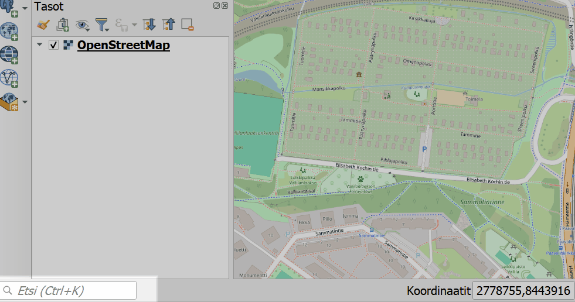
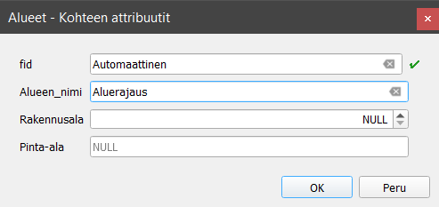
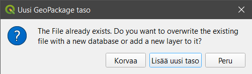
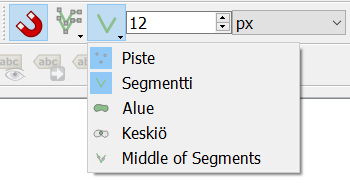
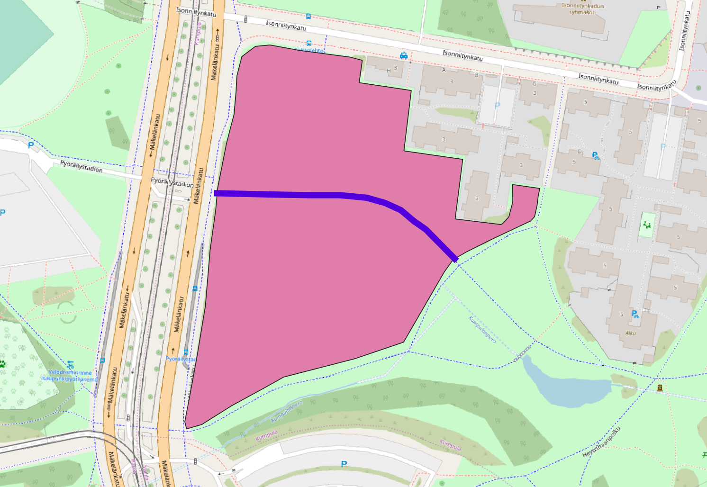
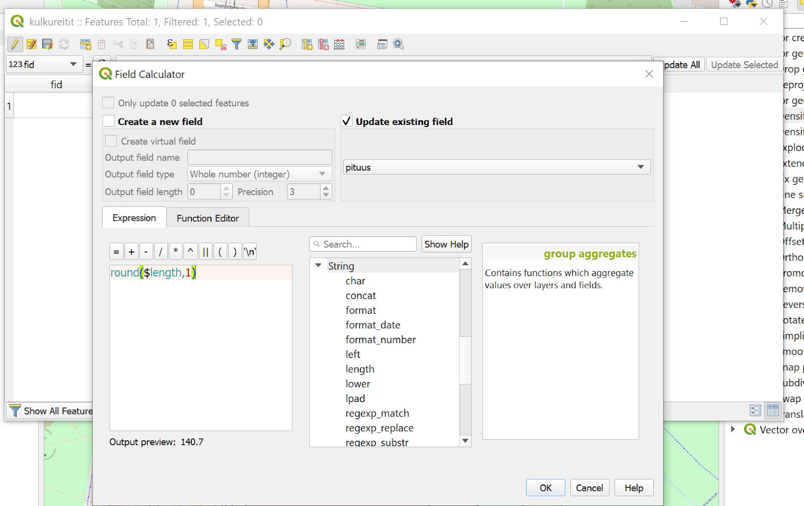
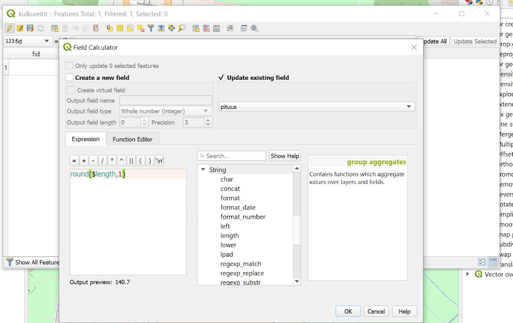
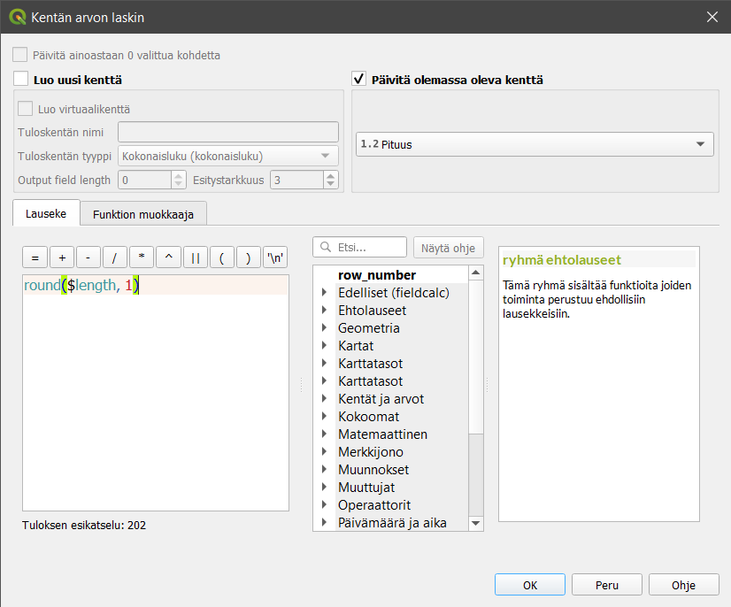

Harjoitus 4: Digitoinnin perusteet
Harjoituksen sisältö
Harjoituksessa luodaan vektoriaineisto hyödyntäen digitoinnin perustyökaluja.
Harjoituksen tavoite
Harjoituksen jälkeen osallistuja osaa lisätä ja luoda tasoja QGISiin.
Arvioitu kesto
30 minuuttia.
Valmistautuminen
Avaa uusi QGIS-projekti (Projekti > Uusi) ja tallenna se nimellä “QGIS-harjoitus 1”.
Muokkauksen yleisasetukset
Muokkauksen toimintoa ja muita yleisiä muokkaustyöasetuksia voit muuttaa päävalikon ikkunassa Asetukset > Valinnat > Digitointi. Jos et esimerkiksi halua, että ominaisuustietojen muokkausikkuna tulee esiin jokaisen polygonin piirtämisen jälkeen niin rastita Älä näytä ominaisuustietojen pop-up lomaketta kohteen luonnin jälkeen. Jätä se kuitenkin päälle tällä kertaa. Kokeile myös vaihtaa kohteiden muokkausväri keltaiseksi (Kuminauha) ja Taitepisteen symbolin tyyli ja koko. Paina OK, niin asetukset tulevat voimaan.

Editoinnin valmistelu
Aloitetaan tekemällä editointia helpottavia valmisteluja. Ensimmäisenä aktivoi omaan projektiisi Työkalut-valikosta seuraavat työkalut:
Digitoinnin työkalupalkki
Digitoinnin lisätyökalujen palkki
Tarttumisen työkalut

Usein ensimmäinen operaatio aineistojen luomisessa on taustakartan lisääminen. Taustakartta helpottaa liikkumista ja aineistojen tarkistusta. Uudemmissa QGISin versioissa on OpenStreetMapin taustakarttatasot saatavilla valmiina. Lisää taustakartta projektiin vasemmalta tuplaklikkaamalla Selain-paneelista XYZ Tiles > OpenStreetMap.

Zoomaa kartta Suomen kohdalle ja koska haluamme tehdä tarkkaa editointia oikeassa koordinaattijärjestelmässä, muutetaan projektin koordinaattijärjestelmä Suomen kansalliseen EUREF-FIN 3067. Klikkaa projektin oikeasta alakulmasta, jossa lukee tällä hetkellä EPSG:3857, jonka QGIS on asettanut taustakartan perusteella.
Paina tämän jälkeen OK, jonka jälkeen avautuva ikkuna kysyy sinulta koordinaattimuunnoksesta. Valitse uudestaan OK ja nyt projektisi on oikeassa koordinaattijärjestelmässä.
GeoPackagen luonti
Luo uusi GeoPackage-taso valitsemalla päävalikosta Tasot > Luo taso > Uusi Geopackage-taso.

GeoPackage on tietokanta, jossa tieto on tallennettu tauluihin. Anna tietokannan nimeksi “Aluesuunnitelma” ja luotavan tason nimeksi “Alueet”. Valitse taulun geometriaksi polygoni ja koordinaattijärjestelmäksi 3067. Lisää GeoPackageen nyt muutama muu uusi sarake seuraavasti:
Nimi: Alueen_nimi / Tyyppi: teksti
Nimi: Rakennusala / Tyyppi: kokonaisluku
Nimi: Pinta-ala / Tyyppi: desimaalinumero

Muista aina klikata Lisää kenttälistaan -painiketta, jotta jokainen kenttä ilmestyy listaukseen.
Integer, 32bit integer vai Integer 64 bit? Tässä tapauksessa valitsemme kentän tyypiksi Integerin, mutta mistä tietää jatkossa, kumman valitsee?
Ensin käyttötarkoitus: mitä lukuja kenttään tallennetaan?
16-bit unsigned integer voi sisältää luvun väliltä -32 768 - 32 767
Signed: 0 - 65 535.
32-bit unsigned integer voi sisältää luvun välillä −2 147 483 648 - 2 147 483 647
Signed: 0 - 4 294 967 295.
64-bit unsigned integer voi sisältää luvunvälillä −9 223 372 036 854 775 808 - 9 223 372 036 854 775 807
Signed: 0 - 18 446 744 073 709,55.
QGIS:issä (versioissa 3.10+) integerit ovat oletuksena signed-tyyppisiä, ellei toisin mainita.
Toisakseen tulee harkittavaksi, mihin tuota tietoa tallennetaan: Geopackage, PostgreSQL vai joku muu? Mitä enemmän käytetään bittejä, sitä suuremmaksi kasvaa tiedostojen koot (myös PostgreSQL:ssä on tiedostoja tietokannan takana). Mitä suuremmat tiedostot, sitä hitaammin asiat sujuvat.
Kolmanneksi pitäisi ottaa huomioon, että siirretäänkö kyseistä aineistoa johonkin toiseen järjestelmään / tiedostoformaattiin. Tuleeko tilanteita, joissa 64bit tallennettu tieto pitääkin viedä tiedostoon, joka ei salli noin suuria numeroita (kuten Shapefile).
Aloita geometrioiden editointi
Etsitään editoitava alue kartalla hyödyntäen QGISin hakutoimintoa OSM-kartan kanssa. QGISin alapalkissa vasemmalla on upotettu Etsi-toiminto, johon on sisäänrakennettu esimerkiksi OpenStreetMapin aineistoon perustuva Nominatim Geocoder, jonka avulla voimme etsiä osoitteita.
Etsiminen tapahtuu kirjoittamalla > jonka perään osoite. Tässä harjoituksessa editoimme Vallilanlaakson aluetta Kumpulassa, joten kirjoitamme hakukenttään > Vallilanlaakso

Jos QGIS versiosi on vanhempi voi olla että tarvitset Nominatim Locator Filter- lisäosan. Asenna se Lisäosat välilehden kautta. Kun olet asentanut lisäosan, hae kohdetta muutoin samaan tapaan mutta aloita haettava osoite osm -sanalla eli kirjoita Etsi- laatikkoon osm Vallilaanlaakso
Huomaa että Vallilanlaakso -sanan jälkeen on lisättävä vielä välilyönti, jotta haku tapahtuu.
Seuraavaksi aloitamme aineiston muokkaamisen klikkaamalla Tason muokkaus päälle/pois -painiketta  . Huomaa, että Digitoinnin työkalupalkin työkalut aktivoituvat.
. Huomaa, että Digitoinnin työkalupalkin työkalut aktivoituvat.

Valitse työkaluksi Lisää polygonikohde ja aloita alueiden digitointi. Hiiren vasemmalla näppäimellä voit klikata kartalla kohteen kulmapisteet. Kun monikulmio on valmis, niin napauta hiiren oikeaa näppäintä, uusi monikulmio on luotu. Digitoi alla olevaa kuvan punaista aluetta vastaava monikulmio.

Kun editointi on valmis, QGISiin avautuu Alueet - Kohteen attribuutit -ikkuna. Laita Alueen_nimi-kohtaan “Aluerajaus”. Muihin kenttiin ei vielä tarvitse täyttää mitään.

Luodaan seuraavaksi uusi GeoPackage-taso, mutta kokonaan uuden tietokannan luomisen sijaan teemme aikaisemmin luotuun Aluesuunnitelma-GeoPackageen vain uuden tason. Anna taulun nimeksi “Kulkureitit” ja lisää siihen seuraavat kentät:
Nimi: Reitin_nimi / Tyyppi: teksti
Nimi: Pituus / Tyyppi: desimaalinumero

Kun klikkaat OK, QGIS kysyy, haluatko korvata olemassa olevan GeoPackage-tiedoston (ja sen taulut) tällä tiedostolla vai lisätä tiedostoon/tietokantaan uuden tason. Valitse Lisää uusi taso, jolloin projektiin lisätään jälleen uusi taso.

Laita nyt vuorostaan tämän juuri luodun tason editointi päälle klikkaamalla Tason muokkaus päälle/pois -kuvaketta (kynäikoni). Koska haluamme että kulkureittien editointi alkaa aivan alueen reunasta, on kytkettävä Tarttuminen (snapping) päälle. Voit tehdä tämän klikkaamalla Ota tarttuminen käyttöön -painiketta  . Valitse ensimmäisestä alasvetovalikosta Kaikki tasot ja toisesta valikosta kuvan mukaisesti Piste ja segmentti. Aseta tarttumisherkkyydeksi 12 pikseliä (oletusherkkyys).
. Valitse ensimmäisestä alasvetovalikosta Kaikki tasot ja toisesta valikosta kuvan mukaisesti Piste ja segmentti. Aseta tarttumisherkkyydeksi 12 pikseliä (oletusherkkyys).

Luodaan seuraavaksi kulkureitti, joka kulkee alueen läpi kuvan mukaisesti. Anna tälle kulkureitille nimeksi “Raitiotie”. Jätä pituus-kenttä vielä tyhjäksi.

Päivitetään attribuuttitaulun kenttiin puuttuvat tiedot Kentän arvojen laskin -työkalun avulla. Avaa laskin klikkaamalla Ominaisuustietojen työkalupalkista Avaa kentän arvojen laskin -painiketta  

Klikkaa avautuvasta ikkunasta Päivitä olemassa oleva kenttä ja valitse alasvetovalikosta Pituus-kenttä. Kirjoita Lauseke-kenttään lauseke, joka laskee viivamaisen kohteen pituuden sekä pyöristää sen yhden desimaalin tarkkuudelle:
round($length, 1)

Laita lopuksi molempien tasojen tason muokkaus pois päältä klikkaamalla kynäkuvaketta. Tallenna kaikki muutokset tasoihin. Kun olet valmis, tallenna projektitiedosto kurssihakemistoon pikanäppäimellä CTRL + T (englanninkielisessä QGISissä CTRL + S) tai päävalikosta Projekti > Tallenna.
Psst! Muista tukipalvelu! Koulutuksen jälkeen saat henkilökohtaista tukea Gispon tukipalvelun kautta lähettämällä yksinkertaisesti koulutustuki@gispo.fi -sähköpostiosoitteeseen kysymyksen tai kommentin jostakin sinua mietityttävästä asiasta. Gispon tiimi auttaa sinua toimiesi äärellä. Kysymykset käsitellään henkilökohtaisesti.